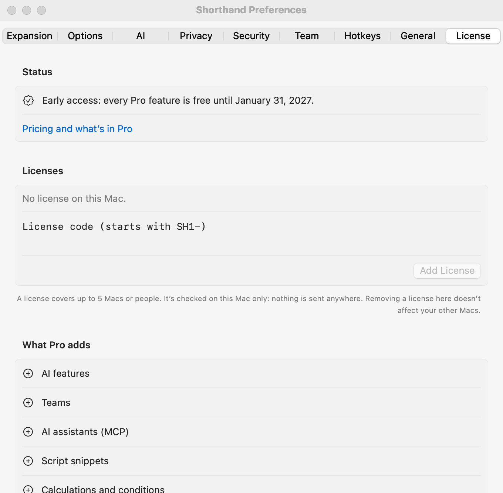

Shorthand Expander Pro and Licenses
Shorthand Expander™ is free for everything you need to type faster on your Mac. Pro adds AI, Teams, and power features for $29 a year, for up to 5 Macs or people.
What’s free
Unlimited snippets and groups, fill-ins, dates and date math, the clipboard, nested snippets, keys, formatted text, per-app rules, the privacy blocklist, encryption and the app lock, tags, search (including search by meaning), Tune Up, the Trash and backups, importing from other apps, exporting (including Text Replacements for iPhone and iPad), free template packs, and updates.
What Pro adds
- AI features: AI Actions,
%aisnippets, Suggest with AI, Fill from Clipboard, Reply using my snippets, Tone by app, Translate Group, and reviewing imported codes, with Apple Intelligence on your Mac or the AI provider you choose. - Teams: share groups with up to 5 people or Macs.
- AI assistants (MCP): let Claude Desktop and other assistants use your snippets.
- Script snippets: AppleScript, shell, and JavaScript.
- Calculations and conditions:
%calcand%if. - Sync across Macs: keep your library in iCloud Drive, Dropbox, or another sync folder.
- Pro template packs.
Early access
Until March 31, 2027, every Pro feature is free for everyone. Settings ▸ License shows the date.
Trial
After early access, every new user gets every Pro feature free for 90 days. The 90 days start when early access ends, or when you first open Shorthand Expander if that’s later. So if you installed during early access, you keep everything until about June 29, 2027.
Adding or removing a license

- Open Settings ▸ License.
- Paste your license code (it starts with
SH1-) and click Add License.
- A license covers up to 5 Macs or people. Add the same code on each Mac.
- The code is checked on your Mac. Nothing is sent anywhere, and the app works offline.
- To take a license off a Mac, click Remove next to it.
If Pro ends
Shorthand Expander never locks you out of your snippets. Pro features pause, and everything else keeps working: your snippets expand, and you can still edit, import, and export them. A snippet that needs Pro (a script, a calculation, or AI) shows a short note instead of expanding. Team groups pause until Pro is back. A library already in a sync folder keeps working there.